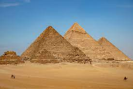
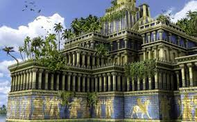
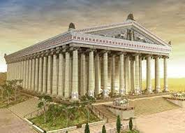
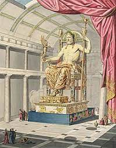
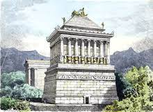
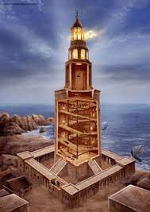
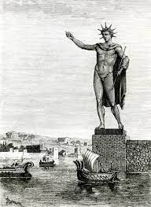

Acasa
Cele 7 minuni ale lumii antice au fost construcții antice considerate remarcabile și unice din punct de vedere arhitectural și tehnic, cu o importanță istorică și culturală deosebită. Aceste construcții au fost construite în perioada antichității și au fost distruse în timp, astfel că astăzi mai rămân doar ruinele lor
Chiar dacă astăzi multe dintre aceste construcții au dispărut, ele continuă să ne impresioneze prin dimensiunile și frumusețea lor. Studiul acestor minuni ne permite să înțelegem mai bine evoluția societății umane și ne oferă o perspectivă asupra realizărilor noastre tehnologice și culturale actuale.
Cu toate acestea, nu trebuie să uităm că există multe alte realizări ale culturii și tehnologiei antice care merită să fie studiate și apreciate. Acestea includ alte construcții remarcabile, precum Templele din Angkor, piramidele din Egipt sau Colosseum-ul din Roma, precum și alte forme de artă, știință și filozofie care au influențat profund cultura noastră modernă.
Piramidele din Giza
Piramidele din Giza sunt un complex de trei piramide antice, construite în jurul anului 2580 î.Hr., în Egiptul antic. Acestea au fost construite ca morminte pentru faraonii Khufu, Khafre și Menkaure și se numără printre cele mai impresionante realizări arhitecturale ale antichității. Piramida lui Khufu este cea mai mare dintre cele trei și este considerată una dintre cele mai mari realizări ale ingineriei antice.
Piramida lui Khufu măsoară aproximativ 147 metri înălțime și a fost construită din milioane de blocuri de piatră grele, unele dintre ele cântărind peste 80 de tone. Se crede că a fost construită în aproximativ 20 de ani, folosind o forță de muncă imensă, formată din mii de muncitori. Piramida lui Khafre este a doua ca mărime și este situată la aproximativ 10 metri mai sus decât piramida lui Khufu. Piramida lui Menkaure este cea mai mică dintre cele trei și a fost construită din blocuri de piatră mai mici.
Toate cele trei piramide au fost acoperite cu o suprafață netedă de piatră albă, care a fost îndepărtată în timp, astfel că astăzi ele par mai puțin impresionante decât înainte. În ciuda acestui fapt, piramidele din Giza continuă să fie un punct de atracție major pentru turiști din întreaga lume.
Grădinile suspendate din Babilon
Grădinile suspendate din Babilon erau o construcție incredibilă de grădini suspendate, construite în Babilonul antic, în jurul anului 600 î.Hr. Acestea au fost construite pentru regina Amytis a Babilonului și au fost considerate unul dintre cele mai mari lucrări de inginerie și arhitectură din antichitate.
Grădinile suspendate din Babilon erau formate dintr-o serie de terase amenajate, care se ridicau unul peste altul, susținute de coloane de piatră. Fiecare terasă era acoperită cu pământ și plante, iar apa era pompată de la râul Eufrat pentru a uda plantele. Se spune că grădinile au fost construite pentru a-i aduce reginei Amytis amintirea munților din patria ei, care erau lipsiți de peisaje verzi. În timp, aceste grădini au devenit unul dintre cele mai faimoase locuri din Babilon și au fost considerate o atracție turistică majoră în antichitate.
Deși nu există dovezi clare că grădinile suspendate din Babilon au existat cu adevărat, majoritatea oamenilor de știință cred că acestea au fost reale. Cu toate acestea, locația exactă a grădinilor și modalitatea lor de construcție rămân subiect de dezbatere.
Templul lui Artemis din Efes
Templul lui Artemis din Efes a fost unul dintre cele mai mari temple din antichitate, construit în Efes (astăzi Turcia) în jurul anului 550 î.Hr. Templul era dedicat zeiței grecești Artemis și a fost distrus și reconstruit de mai multe ori în timpul istoriei sale.
Templul a fost construit din marmură și avea 127 de coloane înalte de peste 18 metri, fiecare fiind sculptată dintr-un singur bloc de marmură. Înălțimea totală a templului era de aproximativ 55 de metri și era considerat una dintre cele mai impresionante construcții din lumea antică.
Templul lui Artemis din Efes a fost distrus în cele din urmă de un incendiu în anul 356 î.Hr. și a fost reconstruit de Alexander cel Mare, dar a fost distrus din nou în secolul al VII-lea d.Hr. de către invadatorii persani. Astăzi, din templul original mai rămân doar câteva ruine, dar acestea continuă să fie o atracție turistică populară.
Statuia lui Zeus din Olympia
Statuia lui Zeus din Olympia a fost o sculptură gigantică a zeului grec Zeus, construită în jurul anului 435 î.Hr. în sanctuarul Olimpiei, Grecia. Sculptura a fost realizată de Fidias, unul dintre cei mai mari sculptori ai antichității.
Statuia lui Zeus măsura aproximativ 12 metri înălțime și a fost realizată din lemn de măslin acoperit cu aur și fildeș. Sculptura arăta zeul Zeus șezând pe un tron, cu un sceptru în mână și îmbrăcat într-o tunică lungă. Statuia lui Zeus a fost considerată una dintre cele mai impresionante lucrări de artă din antichitate și a atras mulți vizitatori în sanctuarul Olimpiei.
Statuia lui Zeus a fost distrusă în secolul al V-lea d.Hr. de către un cutremur, iar astăzi nu mai există decât câteva ruine ale sanctuarului.
Mausoleul din Halicarnas
Mausoleul din Halicarnas a fost un monument funerar construit în Halicarnas (astăzi Bodrum, Turcia) în jurul anului 353 î.Hr. pentru satrapul persan Mausolos și soția sa Artemisia. Mausoleul a fost considerat una dintre cele mai mari și mai frumoase construcții din lumea antică.
Mausoleul avea o înălțime de peste 40 de metri și era format dintr-o bază pătrată masivă decorată cu reliefuri, un nivel intermediar cu coloane și o piramidă în vârf. Clădirea a fost realizată dintr-un amestec de marmură albă și piatră și era decorată cu reliefuri care ilustrau scene din mitologia greacă.
Mausoleul a fost distrus în secolul al XII-lea d.Hr. de un cutremur și de atacurile invadatorilor. Astăzi, din clădire mai rămân doar câteva fragmente, dar designul său a influențat multe construcții funerare ulterioare.
Farul din Alexandria
Farul din Alexandria a fost o construcție masivă din piatră construită în jurul anului 280 î.Hr. pe insula Pharos din fața orașului Alexandria, Egipt. Farul era una dintre cele mai înalte construcții din lumea antică, cu o înălțime estimată de aproximativ 120 de metri.
Farul a fost construit pentru a ghida navele în portul Alexandria și a fost considerat una dintre cele mai importante construcții tehnice din antichitate. Clădirea a fost realizată din piatră și a fost decorată cu sculpturi și mozaicuri.
Farul a fost distrus în secolul al XIV-lea d.Hr. de un cutremur și a fost înlocuit de o fortăreață construită pe insula Pharos. Astăzi, nu mai rămân decât câteva ruine ale farului, dar acestea continuă să fie o atracție turistică populară.
Colosul din Rhodos
Colosulul din Rhodos a fost o sculptură gigantică a zeului grec Helios, construită în jurul anului 280 î.Hr. în orașul Rhodos, Grecia. Sculptura măsura aproximativ 33 de metri înălțime și a fost realizată din bronz.
Colosulul era amplasat la intrarea în portul Rhodos și a fost considerat una dintre cele mai impresionante construcții din lumea antică. Sculptura a fost distrusă în secolul al VII-lea d.Hr. de către un cutremur și a rămas în ruine până în secolul al XIV-lea d.Hr., când a fost vândută unui negustor italian care a topit-o și a vândut-o ca fier vechi.
Astăzi, nu mai există decât câteva ruine ale bazei colosului, dar acesta continuă să fie o atracție turistică populară în orașul Rhodos.